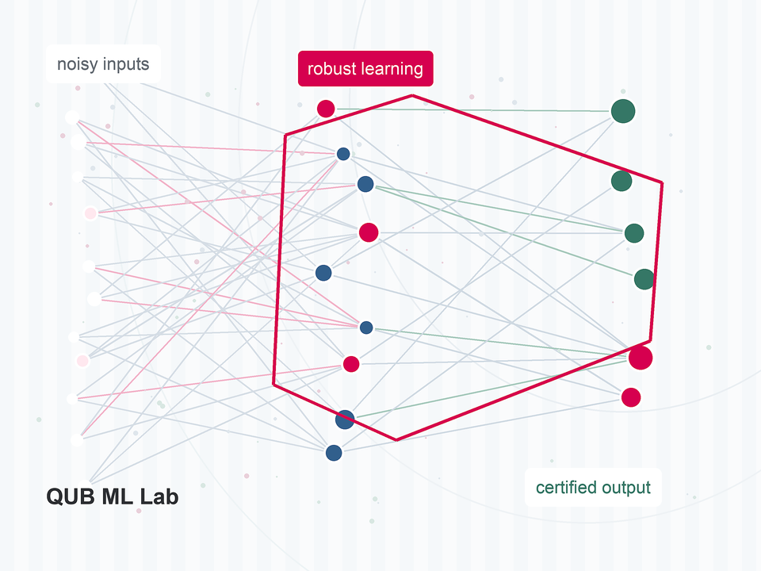

Queen's University Belfast
Robust machine learning for imperfect information.
We study machine learning and computer vision systems that remain reliable when supervision, data, evaluators, or deployment conditions are noisy, incomplete, or adversarial.

Latest News
- May 2026 Dr. Feng is visiting the KUIS AI Center at Koç University, hosted by Prof. Çiğdem Gündüz Demir.
- Mar 2026 Dr. Feng received the Journal of Cybersecurity and Privacy Travel Award.
- Feb 2026 Two first-author papers were accepted to ICLR 2026 and CVPR 2026.
- Oct 2025 Two papers were accepted to ACM MM 2025, including work on open-set label noise.
- Feb 2025 PROSAC was accepted by AAAI 2025 as an oral presentation.